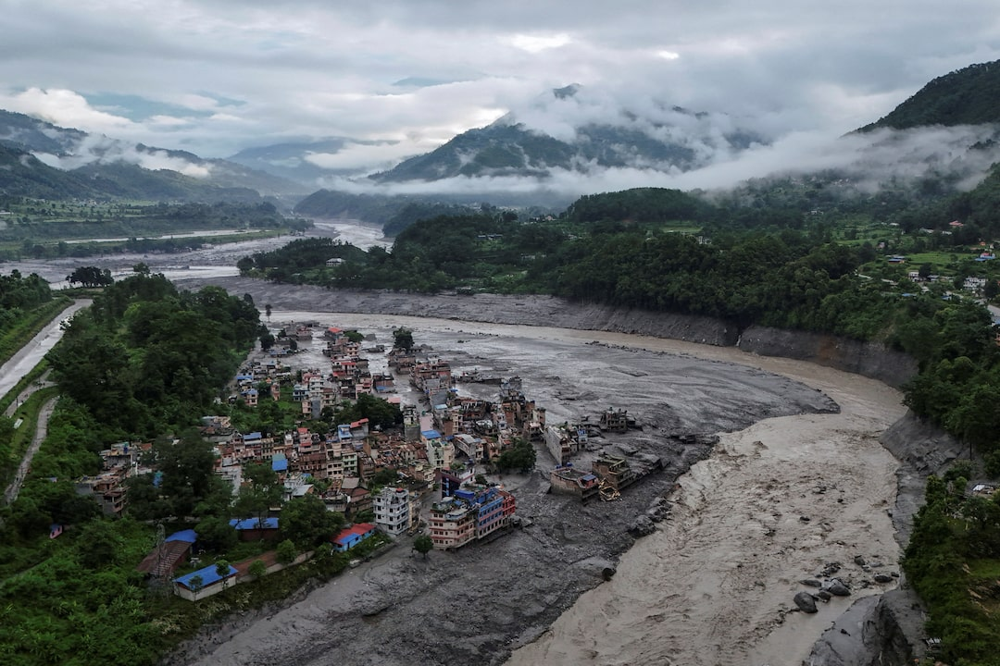
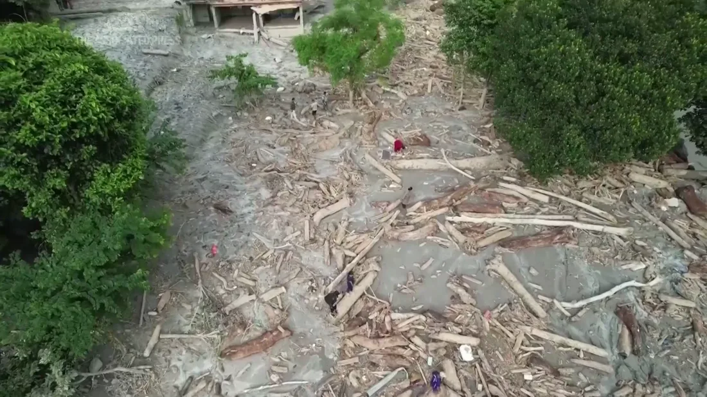
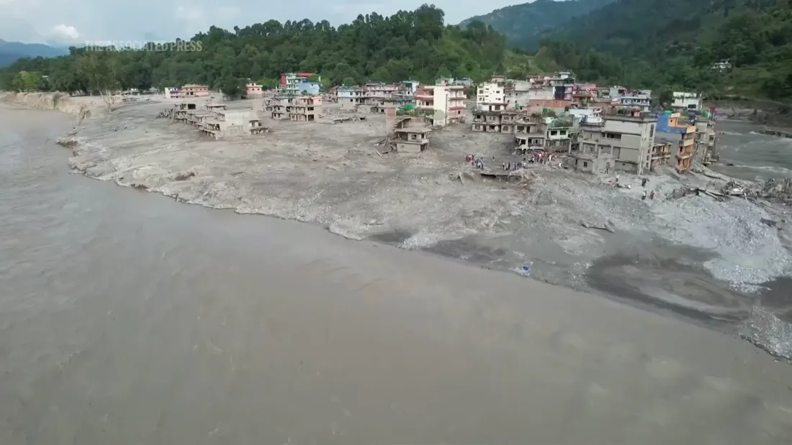
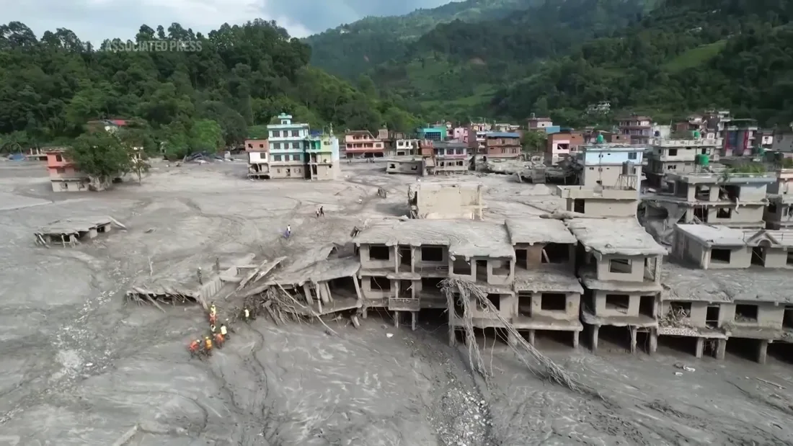

Confirmed deaths
Reported by the United Nations on 9 September.
UN · 9 Sep 2026Nepal contributed almost nothing to the climate crisis. Its people are living with the consequences.
On Wednesday, 26 August 2026, a large mass of bedrock and glacier ice collapsed high in the Himalayas near the Nepal–Tibet border, releasing a powerful surge of water, rock, ice, and debris into communities downstream. Ice and permanently frozen ground help hold these steep mountain slopes together; as global temperatures rise, that ice melts and the frozen ground thaws, loosening rock and making destructive collapses more likely. This is how climate change turns a warming mountain into an immediate threat to the people living below.
Associated Press · 9 Sep 2026 Impact reports publishedReported by the United Nations on 9 September.
UN · 9 Sep 2026The reported total as of 9 September.
UN · 9 Sep 2026Destroyed or reported as needing reconstruction.
AP · 8 Sep 2026A preliminary estimate equal to approximately 6.0% of Nepal’s 2024 GDP.
AP · 8 Sep 2026 World Bank GDP
01“A stark example of climate injustice.”
Nepal’s historical contribution to global CO₂ emissions is extremely small. Its communities nevertheless face severe losses from floods and other climate-related hazards.
Emergency relief is only the beginning. Recovery also means rebuilding homes and public services, supporting displaced families, and preparing communities for future risks.
Read the United Nations report
Flood debris along a riverbank in Nepal. Still from the supplied Associated Press video; recording date not provided.

A riverside community surrounded by flood sediment in Nepal. Still from the supplied Associated Press video; recording date not provided.

Damaged buildings and flood sediment in Nepal. Still from the supplied Associated Press video; recording date not provided.
If you choose to donate, use the organizations’ official websites below. Each link opens the organization’s own donation or emergency-response page.
The official relief fund supports disaster response and recovery in affected communities.
Prime Minister’s Disaster Relief FundVisit the official fundRed Cross teams provide emergency relief, first aid, clean water, and essential supplies.
Red Cross & Red CrescentVisit the donation pageUNICEF supports children and families with safe water, healthcare, nutrition, and protection.
United Nations Children’s FundView the emergency responseIf you are in Nepal and can help in another way, use the government portal to offer supplies, transport, shelter, skills, or other practical support.
Rasuwa Flood Rescue PortalOffer help through the portalEvery link opens an organization’s official website. This site does not collect funds or assistance.